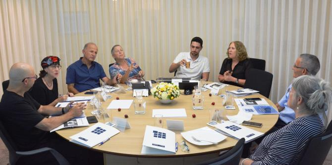

During their sixties, people face new challenges and enter a new stage of development, both personally and professionally. The increase in life expectancy and the unique characteristics of this stage of life raise dilemmas, questions, and opportunities that require analysis and consideration. Beyond this, the unique nature of Mandel graduate requires a different approach to certain aspects of retirement than what is commonly found in the retirement preparation courses of other frameworks.
On September 19, 2019, the Mandel Graduate Unit hosted a meeting that surveyed the range of possibilities and analyzed the challenges that typify this stage of life. Issues discussed included:
- Is continuing professional development and involvement after retirement age a matter of special importance to members of the Mandel graduate community?
- Is this stage in life an opportunity for graduates to continue their existing professional involvement or perhaps to study new content with which they had not been engaged prior to their retirement?
- Is it possible to utilize the knowledge and experience of retiring Mandel graduates? If so, how? Should that knowledge and experience be directed inward, within the Mandel graduate community, or toward the fields of education and society in the broad sense?
- Does the Mandel Graduate Unit have a role to play at this stage of life? If so, what should its role be? What are the next steps?
The event was held as part of a collaboration with Dr. Naomi Baum, a psychologist who is a graduate of Cohort 9 of the Mandel School for Educational Leadership. It was led by Rakefet Mossek, the consultations director of the Mandel Graduate Unit.
Graduates who participated in the event included
Miri Wand (a graduate of Cohort 3 of the Mandel School for Educational Leadership),
Dr. Yitschack Hafouta (a graduate of Cohort 4),
Yona Prital (a graduate of Cohort 5),
Esther Rosset (a graduate of Cohort 9),
Israel Sorek (a graduate of Cohort 2 and current faculty member of the Mandel Center for Leadership in the Negev), and
Motti Shklar (a graduate of the first cohort of the Mandel School).

{kind=link}